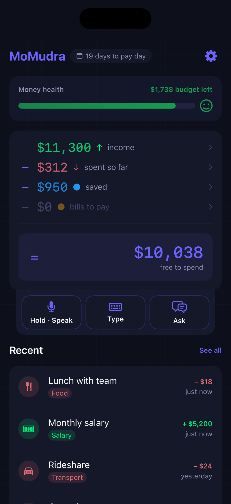

My own product
MoMudra
Budgeting that follows your pay cycle, not the calendar month.
- 30 Jul 2026Shipped
- SoloBuilt by
- iOS 18+Requires

How it's builtA Cloudflare Worker holds the vendor keys and serves routing config from KV, so the app never calls a model provider directly. On device SwiftData persists the cycles, one cycle-scoped calculator owns every derived figure, and AI replies cache by prompt hash.